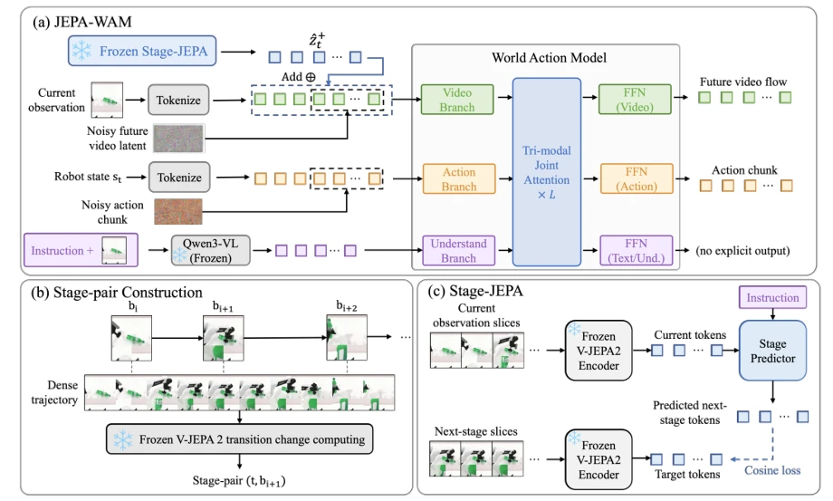
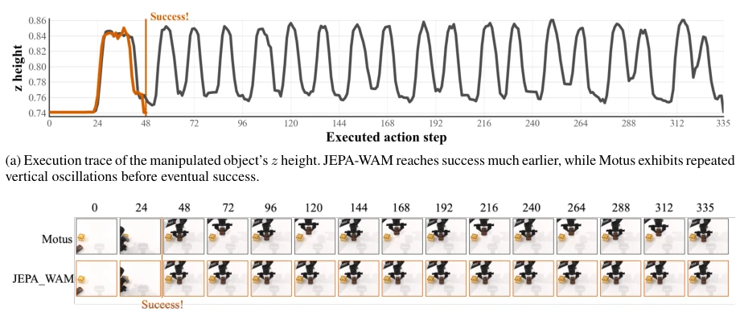
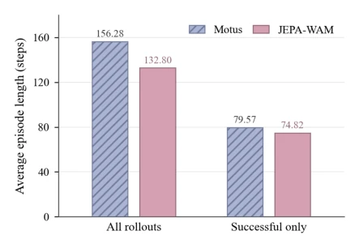
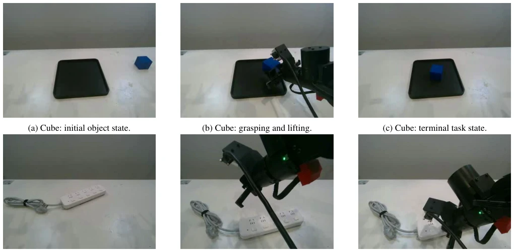
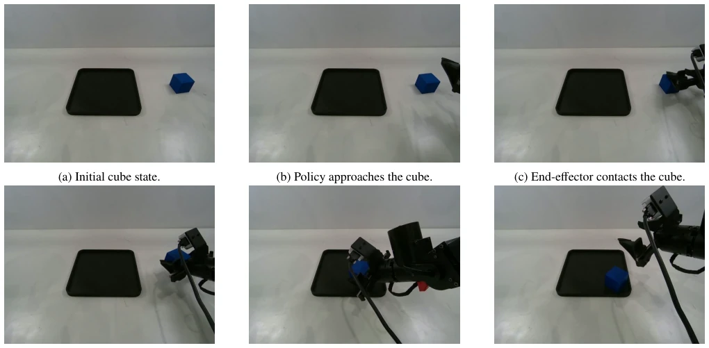
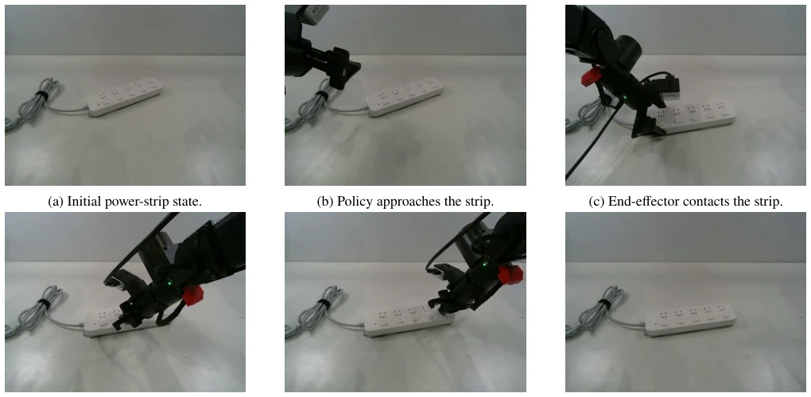

This paper equips robot world models with a 'navigator', attempting to solve the problem where WAMs only focus on the present and ignore the future. The authors decompose the future into 'short-term physical future' and 'stage semantic future', the former managing action execution, the latter managing task progress. JEPA-WAM essentially incorporates a JEPA predictor on top of Motus, using the frozen encoder of V-JEPA2 to extract features, predict the latent state of the next stage, and then inject this state into the video generation stream. This strategy is quite clever, avoiding appearance interference caused by direct pixel prediction and focusing on task logic. However, will this two-stage training and additional inference steps increase latency? It performs well in simulation, but the real-world transfer (LIFT2) data volume seems limited, and it relies on large models like V-JEPA2, with significant computational overhead. Overall, it is an effective fine-tuning on the WAM architecture, proving the necessity of 'macro guidance' for 'micro control', but it has not reached the level of disruptive innovation, more of an engineering combination optimization.
研究动机Motivation
通用机器人策略的核心挑战在于如何平衡局部动作执行与全局任务规划。现有的 Vision-Language-Action (VLA) 模型（如 RT-2, Zitkovich et al. 2023）直接将观测和指令映射为动作，缺乏对任务演进的显式建模，容易导致策略在长程任务中迷失方向。World Action Models (WAMs)（如 Motus, Bi et al. 2025）虽然联合预测了视频和动作，提供了密集监督，但它们通常将未来表示为固定的短时视频动作块，仅捕捉局部场景演化，未明确描述任务如何从当前阶段推进到下一阶段。这种短视预测可能导致机器人在关键状态转换时产生冗余动作或陷入局部循环，无法理解“下一步该达成什么状态”。因此，如何预测有意义的任务阶段进展，而非仅仅预测下一帧像素，成为提升长程操作鲁棒性的关键。JEPA 架构（Bardes et al. 2024）通过预测潜在表示而非像素，为建模这种阶段级未来提供了自然机制，这正是本文试图结合 WAM 解决的问题，旨在填补语义规划与物理执行之间的鸿沟。
The core challenge of general-purpose robot policies lies in how to balance local action execution and global task planning. Existing Vision-Language-Action (VLA) models (e.g., RT-2, Zitkovich et al. 2023) directly map observations and instructions to actions, lacking explicit modeling of task evolution, which easily leads to policies losing direction in long-horizon tasks. World Action Models (WAMs) (e.g., Motus, Bi et al. 2025) although jointly predict video and actions, providing dense supervision, they usually represent the future as fixed short-term video-action blocks, only capturing local scene evolution, not explicitly describing how the task progresses from the current stage to the next stage. This short-sighted prediction may cause robots to produce redundant actions or fall into local loops during critical state transitions, unable to understand 'what state should be achieved next'. Therefore, how to predict meaningful task stage progress, rather than merely predicting the next frame pixels, becomes key to improving long-horizon operation robustness. JEPA architecture (Bardes et al. 2024) provides a natural mechanism for modeling this stage-level future by predicting latent representations rather than pixels, which is exactly the problem this paper attempts to solve by combining with WAM, aiming to bridge the gap between semantic planning and physical execution.

Figure 2: Overview of JEPA-WAM. (a) JEPA-WAM injects frozen Stage-JEPA guidance into the video stream of a World Action Model, enabling the predicted next-stage latent tokens to condition short-term video-flow and action-chunk prediction. (b) Stage-pair construction uses frozen V-JEPA2 representation changes to infer stage boundaries from dense robot trajectories and pairs each current frame t with its next boundary bi+1. (c) Stage-JEPA is trained by encoding current and next-stage observation slices with frozen V-JEPA2 and aligning predicted next-stage tokens with target tokens using cosine loss.
JEPA-WAM adopts a two-stage training framework, decoupling task progress prediction and physical execution modeling. The first stage trains the target conditional JEPA predictor (Stage-JEPA). Utilizing the frozen V-JEPA2 encoder (Assran et al. 2025) to automatically detect stage boundaries from robot trajectories, constructing training pairs of current frame and next stage boundary based on feature change heuristics, predicting the latent representation of the next stage. The second stage freezes the JEPA branch, training a Motus-based WAM. WAM includes video generation, action, and visual language understanding experts. The innovation lies in the gated interface: after matching dimensions via MLP of the next stage latent representation predicted by Stage-JEPA, injecting into the WAM video token stream in residual form as denoising condition. This design allows macro task progress to directly guide micro video generation and action generation, rather than merely as a modification of current observations. During inference, JEPA first predicts stage goals, then inputs to WAM to generate short-term video and action blocks, forming a closed loop. Training objectives include video reconstruction, action prediction, and JEPA latent alignment loss, simultaneously introducing gating regularization to prevent injected features from being too large and interfering with the original video stream, ensuring the accuracy of physical dynamics.

Figure 3: Qualitative case study of stage-guided execution. JEPA-WAM uses the predicted next-stage latent to guide local action generation and reaches the success condition with fewer executed steps. In contrast, Motus eventually succeeds only after a longer trajectory with repeated up-and-down motion of the manipulated object.
Experiments are conducted on the RoboTwin 2.0 simulation benchmark, covering 50 manipulation tasks, including cleaning and randomized environments. Baselines include GO-1, π0.5, X-VLA, and Motus. The main metric is task success rate. JEPA-WAM achieves 91.42% success rate in clean environments, 89.08% in randomized, outperforming Motus. In successful trajectories, average execution steps reduced by 5.97%, indicating stage guidance reduced redundant corrections. Ablation studies show removing JEPA predictor leads to significant performance drop, proving stage conditional path effective; modifying only current observation without injecting future latent representation performs poorly, indicating future information must be explicitly transmitted. Real-world experiments conducted on LIFT2 platform, although data limited, but demonstrated stage progress visualization in grasping and plug-in tasks. Results confirm the effectiveness of stage-level future guidance on improving operation efficiency and success rate, especially in tasks requiring clear state transitions, such as handover and stacking, but improvement is limited in tasks relying on contact geometry, reflecting model's dependence on physical interaction.

Figure 4: Execution efficiency on RoboTwin 2.0. We report the average episode length over all evaluation rollouts and over successful rollouts only; lower is better.

Figure 5: Real-robot task-stage visualization on the LIFT2 platform. The top row shows cube grasping, and the bottom row shows power-strip operation. For each task, the panels show the initial object state, the main interaction stage, and the terminal task state.
其他图片Other Figures

Figure 6: Representative closed-loop JEPA-WAM rollout on the LIFT2 cube-grasping task. The panels show the policy pro- gressing from the initial state, through approach, contact, lifting, and transfer, to the terminal task state.

Figure 7: Representative closed-loop JEPA-WAM rollout on the LIFT2 power-strip task. The panels show the policy progressing from the initial state, through approach, contact, alignment, and switch-pressing interaction, to the terminal task state.